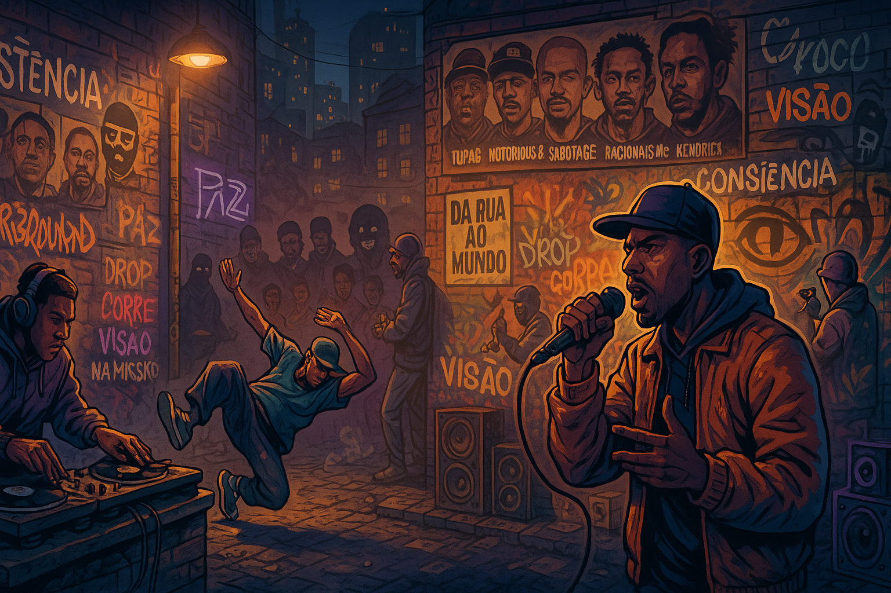

Hip-Hop? Passa a visão!
O Hip-Hop é mais do que um gênero musical — é uma revolução cultural que nasceu da dor, da criatividade e da resistência. Sua história começa no início dos anos 1970, no Bronx, em Nova York, um bairro marcado por pobreza, violência e negligência do poder público. Nesse cenário, jovens afro-americanos, latinos e caribenhos criaram uma nova forma de expressão que unia música, dança, arte e discurso social.
Ao longo das décadas, o Hip-Hop evoluiu, quebrou barreiras e se espalhou pelo mundo, influenciando não apenas a música, mas também a moda, a dança, a arte e a linguagem. É uma força contínua de inovação e comentário social.
O nascimento do movimento
Em 11 de agosto de 1973, DJ Kool Herc, um jamaicano radicado no Bronx, organizou uma festa no número 1520 da Sedgwick Avenue. Lá, ele usou dois toca-discos para repetir os “breaks” — trechos instrumentais das músicas — criando batidas contínuas que deram origem ao breakdance. Essa técnica foi o embrião do DJing, um dos quatro pilares do Hip-Hop, ao lado do MCing (rap), do breakdance e do grafite
A filosofia da Zulu Nation
Afrika Bambaataa, ex-membro de gangue, fundou a Universal Zulu Nation em 1973, transformando a energia das ruas em um movimento de paz, união e conhecimento. Ele ajudou a consolidar o Hip-Hop como uma cultura com propósito social, não apenas entretenimento.
A explosão nos anos 1980
Com o avanço da tecnologia e a popularização das block parties, o Hip-Hop ganhou as rádios e as ruas. Grupos como Run-D.M.C., Grandmaster Flash and the Furious Five e Public Enemy usaram o rap para denunciar racismo, pobreza e violência policial. O grafite se espalhou pelos metrôs e muros como arte de protesto, e o breakdance virou símbolo de resistência corporal.
Os anos 1990: diversidade e globalização
Essa década foi marcada pela ascensão do gangsta rap, com nomes como N.W.A., Tupac Shakur e The Notorious B.I.G., que retratavam a dura realidade das periferias americanas. Ao mesmo tempo, surgiram vertentes como o rap alternativo e o hip-hop consciente, com artistas como A Tribe Called Quest e Mos Def. O Hip-Hop se espalhou pelo mundo, adaptando-se às realidades locais.
Hip-Hop no Brasil
Chegando ao país nos anos 1980, o Hip-Hop encontrou solo fértil nas periferias de São Paulo. Grupos como Racionais MC’s, DMN e Sabotage deram voz às favelas, denunciando a desigualdade e o racismo estrutural. O movimento cresceu com batalhas de rima, oficinas culturais e coletivos que usavam a arte como ferramenta de transformação social.
O século XXI: inovação e resistência
Hoje, o Hip-Hop é uma força global que influencia moda, linguagem, comportamento e política. Artistas como Kendrick Lamar, Jay-Z, Beyoncé e Emicida continuam a usar o microfone como instrumento de crítica e empoderamento. A cultura se reinventa com o trap, o drill e o rap acústico, mas mantém viva sua essência: dar voz a quem foi silenciado.